- 第一章
- 第二章 技术预研篇
第一章
1 课程介绍
1-1 使用nodejs过程中遇到的问题
- Node.js程序运行不稳定，经常出现服务不可用的情况
- Node.js程序运行效率低
- 前端同学对服务端技术不熟悉，培训困难，推广受阻
1-2 nodejs为什么值得学习?
- Node.js拥有广大的JavaScript程序员基础，并且完全开源，所以它拥有一个强大的开发者社区，依靠繁荣的社区力量，现在已经发展出成熟的技术体系以及庞大的生态。
它被广泛应用在Web服务、开发工作流、客户端应用等领域，其中在Web服务开发领域，业界对它的接受程度是最高的。
通常它会被用来做一个BFF层，即Backend For Frontend（服务于前端的后端），通俗地说，就是一个专门为前端业务提供数据的后端程序。这类程序的特点是，不需要太强的服务器运算能力，但对程序的灵活性有较高的要求。这两个特点正好与Node.js的优势相吻合。 - 在Web服务开发领域搭建一个Node.js BFF层是有很大好处的：
- 对于Web业务本身来说，Node.js现在是最适合用来做BFF层的一门技术。
有一个Node.js BFF层，能让前端有能力自由组装后台数据，这样可以减少大量的业务沟通成本，加快业务的迭代速度；同时，前端工程师能自主决定前端与后台通讯的方式，也让前端工程师有了更多能力着手于Web应用的性能优化。 - 对于后端和运维工程师来说，Node.js BFF层的搭建，绝对不是一个光靠前端工程师就能完成的事情，在搭建过程中涉及到的RPC调用、系统运维等场景，都需要后端和运维的紧密配合。
通过搭建BFF层，除了后续能大幅减少自己在繁重业务中的工作量之外，还可以大大提升自己在架构领域的知识经验。 - 对于前端工程师自身来说，Node.js虽然是一门非浏览器端的技术，但是它基于JavaScript的环境，能让前端工程师快速上手。
我们可以经由Node.js涉足数据库、操作系统、人工智能等领域，让前端工程师不再因为技术的壁垒将眼光局限在浏览器这一个环境内。
- 对于Web业务本身来说，Node.js现在是最适合用来做BFF层的一门技术。
1-3 使用nodejs的难点在哪里?
- Node.js这门技术除了JavaScript之外，其他地方和浏览器技术几乎毫无交集，即使是数据结构、设计模式等等程序员通用技巧，也都有侧重点不一样的部分。
比如，在使用Node.js的过程中，前端工程师需要了解诸如RPC调用、进程管理等非浏览器端的知识。 - 除此之外，在推广Node.js的过程中，可能还会遇到产品、后台、运维甚至老板等不同角色的质疑，导致前端使用Node.js开展业务会碰上各种各样的阻力。
- 因此，除了补充必要的后端开发知识和系统运维知识外，我们还需要对Node.js的优缺点、它能给业务带来的价值都有非常深入的理解，才能说服他人配合你，完成从前端到后台的一整套项目开发。
3 nodejs是什么?
- 根据官网的话：
Node.js是一个基于Chrome V8引擎的JavaScript运行环境。
Node.js使用了一个事件驱动、非阻塞式I/O的模型，使其轻量又高效。
其实没必要知道这些！！！ - 在Node.js里运行JavaScript跟在Chrome里运行JavaScript有什么不同？Chrome浏览器用的是同样的JavaScript引擎和模型。
其实，在Node.js里写JS和在Chrome里写JS，几乎没有不一样。 - 那么不一样在哪里呢？
- Node.js没有浏览器API，即document、window等。
- 加了许多Node.js API，比如文件系统、进程等等。
- 对于开发者来说，Node.js：
- 你在Chrome里写JavaScript控制的是浏览器
- Node.js让你用类似的方式，控制整个计算机。
- Node.js的真谛（即官网的定义），需要你在Node.js的学习过程中慢慢理解。
4 nodejs可以用来做什么?
4-1 由什么需求决定的? 以腾讯视频网页版为例
- 搜索引擎的优化 + 首屏速度优化 = 服务端渲染
- 需要实现搜索引擎的优化；
- 要实现网页首屏的加速。
- 服务端渲染 + 前后端同构 = Node.js
同一模板要考虑前后端复用问题，即前后端可以采用同一套代码，所以为了达到服务端渲染和前后端同构，最后决定采用Node.js。
4-2 构建工作流 (automate and enhance your workflow)-nodejs现在被广泛运用的另一个场景
gulp官网上的一个简单例子：
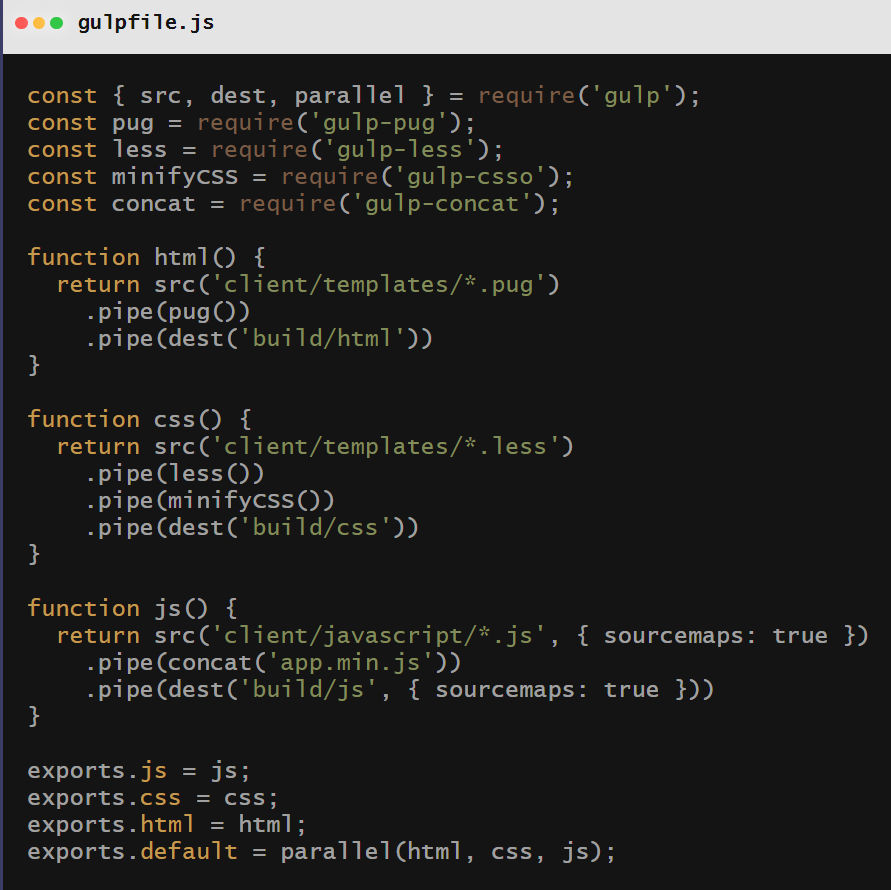这个例子具体做了什么？
它可以给html、css、js文件各做一些预处理，比如html任务，网页对模板做了个预编译；css任务表示样式是用less语言编写，可以通过gulp编译成css，再放到它们的生产目录上；js任务表示有很多js，通过gulp打包拼在了一起，并且做了个压缩混淆，再放到生产目录。webpack是用来打包所有的样式、js、图片等的工具。
众所周知，前端优化的一个重要原则，就是把这些资源打包得尽可能少，建立尽可能少的HTTP连接，这样就能够加速网页的加载。因为构建工具不会永远不出问题，也不会永远满足需求，所以使用Node.js做JS构建工具，是最保险的选择。
4-3 开发工具visual studio code-nodejs的第三个应用场景
4-4 游戏-wayward
- 它是一个沙盒类生存游戏，自由度非常高，即玩家想干嘛就干嘛，想使哪里就使哪里。
- 它也是基于Node.js的，为什么？
- 像这种大型应用，都需要给使用者自定义模块的能力。
- 使用Node.js做复杂本地应用：
可以利用JS的灵活性提供外部扩展；
JS庞大的开发者技术让他们的灵活性得到利用。
4-4 客户端应用-twitch-tv
- 它是个游戏直播网站，它也是用Node.js开发的，这是因为他们的网页和客户端应用是一模一样的。
- 他们需要在已有网站的情况下，新开发客户端应用，这就可以使用Node.js客户端技术（electron）实现，最大限度复用现有工程。
5 课程实战项目介绍
这个项目是个Node.js版极客时间网站，包括一些典型的页面：
列表页
打通前后台通信
包括把浏览器地址栏传的参数都一一解析出来，然后传到后台的微服务去，等到后台的数据返回之后，我们再渲染成页面，返回到前端服务端渲染
这个页面涉及比如下拉加载、过滤条件的变化等服务端渲染的功能
详情页
- 网页路由
HTTP服务器需要支持url路由，或者让Node.js前面加一项反向代理做路由，最终使Node.js能够支持列表页和详情页 - 异步加载
涉及功能点还有课程介绍和课程目录在Node.js服务上实现无刷新切换。
- 网页路由
播放页
- API服务器
评论系统点赞需要API服务器，实现小量的json数据的交换。
涉及的功能点还有章节的选择等。
- API服务器
第二章 技术预研篇
6 什么是技术预研?
- 在程序开发前，把需要用到的技术和工具全都调试的没问题了再开发，这样使得开发技术变得更加顺利，这就是技术预研的作用。
- 具体怎样进行技术预研？
- 分析要做的需求，找出技术难点。
- 针对每个技术难点进行攻克和测试。
- 我们这个项目属于一个BFF层，通俗点讲，它属于浏览器跟后台服务中间的一个中间渲染层，这个中间渲染层则组装后台返回的各个微服务里面返回的数据，并且组装成前端所需要的数据，再返回到？
- 这样的BFF层的主要职责有两个：
- 对用户侧提供HTTP服务
- 使用后端RPC服务
7 nodejs开发环境安装
- Chrome的安装
- VSCode的安装
- Node.js的安装
直接去官网下载安装 - 包管理工具npm的安装
8 第一个nodejs程序-石头剪刀布游戏
8-1 前言
- 在这个游戏中，我们会看到：
- Node.js的运行方式是怎样的
- Node.js的全局变量是怎样使用的，以及它有哪些全局变量
- 新建node_js文件夹，新建node_js/index.js文件，里面编写代码
console.log('hello world')，并在终端打开项目，执行$ node index.js，就能看到hello world被打印出来。
这个node命令会读取index.js中的内容，并运行它里面的js代码。 - Node.js的某些全局变量与Chrome里的有些差别，如：运行
1
2
3
4
5console.log(Date)
console.log(Math)
console.log(setTimeout)
console.log(setInterval)
console.log(requestAnimationFrame) // 它的含义是浏览器渲染的下一帧，由于我们不是处于浏览器环境，所以它是不存在的，会报错$ node index.js后的打印结果如下：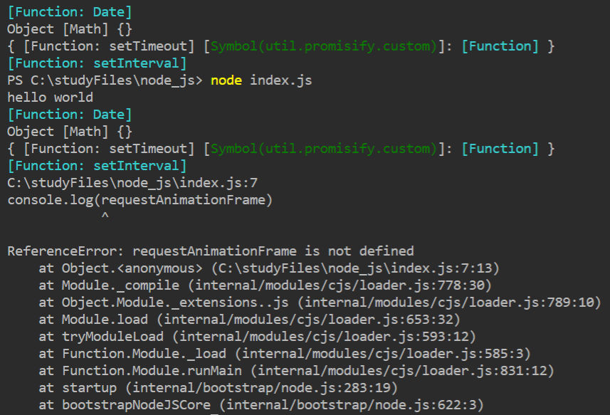Node.js为了弥补requestAnimationFrame的确实，额外提供了一个：打印结果为：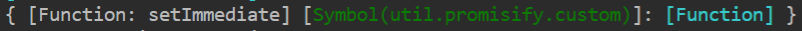1
console.log(setImmediate)
- Node.js特有的环境变量：打印结果为：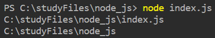
1
21. console.log(__filename) // 表示当前运行的脚本所在的位置
2. console.log(__dirname) // 表示当前运行的脚本所在的目录位置打印结果为：1
3. console.log(process) // 记载了我们运行这个Node.js程序的进程信息
1
2
3
4
5
6
7
8
9
10
11
12
13
14
15
16
17PS C:\studyFiles\node_js> node index.js
process {
version: 'v10.16.3', // 表示Node.js的版本号
platform: 'win32', // 表示运行环境的操作系统
hrtime: { [Function: hrtime] bigint: [Function] }, // 是用来统计时间的，它的时间精度可以到微秒级，我们需要做时间统计时可以用这个函数
cpuUsage: [Function: cpuUsage], // 打印cpu占用率
memoryUsage: [Function: memoryUsage], // 打印内存占用率，与cpuUsage在性能分析时经常用到
exit: [Function],
kill: [Function], // 与exit是用来管理和杀进程的操作
argv: [ // 表示用户在启动这个进程时，敲击的命令是怎样的，这个会在我们做命令行程序时用到
'C:\\dev\\nodejs\\node.exe',
'C:\\studyFiles\\node_js\\index.js'
],
env: { // 打印Node目前所运行环境的环境变量，可以让我们在快速启动Node.js时做一些配置，让我们的程序可以根据环境变量做一些分析
Path: ...
}
}
8-2 利用process-argv正式编写石头剪刀布游戏
1 | var playerAction = process.argv[process.argv.length - 1] |
9 模块-commonjs规范
- JS中采用
<script />加载js文件，它存在以下问题：- 脚本变多时，需要手动管理加载顺序。
- 不同脚本之间逻辑调用，需要通过全局变量的方式。
全局变量多了，程序就很难管理；而且全局变量还存在被别人覆盖的风险。 - 当JS运行环境没有html怎么办？
9-1 commonjs规范的使用过程
创建node_js/commonjs文件夹，并在它里面创建两个文件index.js和lib.js
编写index.js：
1
2
3console.log('start require')
require('./lib.js') // 会根据CommonJS规范引入lib.js
console.log('end require')编写lib.js：
1
console.log('hello gc')
打印结果为：
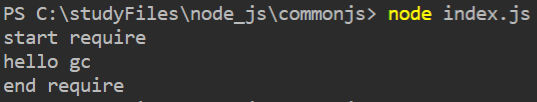当一个初始状态模块被别人引用后，它默认是一个空对象。比如，我们可以将index.js中的require的结果赋值到一个变量上，并打印出来看一下：
1
2var lib = require('./lib.js')
console.log('end require', lib)打印结果为：
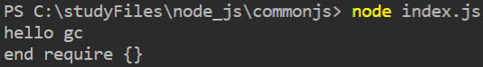我们可以在lib.js模块的exports上挂一个属性，再次打印看下结果：
1
2
3
4
5
6// lib.js：
console.log('hello gc')
exports.hello = 'world'
// index.js：
var lib = require('./lib.js')
console.log(lib)打印结果为：
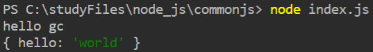exports上也可以挂函数、对象等：
1
2
3
4
5exports.hello = 'world'
exports.add = function(a, b) {
return a + b
}
exports.geekbang = { hello: 'world' }打印结果为：
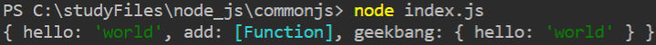验证lib.js模块中exports出的对象与index.js中require的变量是同一个引用：
1
2
3
4
5
6
7
8
9
10
11
12
13index.js：
var lib = require('./lib.js')
lib.additional = 'test'
lib.js：
exports.hello = 'world'
exports.add = function(a, b) {
return a + b
}
exports.geekbang = { hello: 'world' }
setTimeout(() => {
console.log(exports)
}, 2000)2s后打印结果显示为：
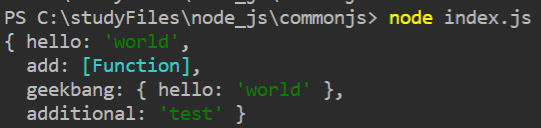假如希望exports不是一个对象，它可以是一个函数或其他基础数据类型
1
2
3
4
5
6
7
8
9
10
11
12
13// lib.js：
exports.hello = 'world'
exports.add = function(a, b) {
return a + b
}
exports.geekbang = { hello: 'world' }
module.exports = function minus(a, b) {
return a - b
}
// index.js：
var lib = require('./lib.js')
console.log(lib)打印结果为：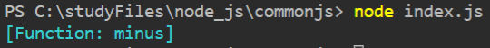
PS：无论lib.js中有没有exports其他的，打印结果都以module.exports为准，也可以理解为module.exports会把exports出的变量覆盖掉
使用webpack打包会发现每个模块都被打包到一个函数里，这是因为每个模块都是一个独立的作用域，而js中创建独立作用域的方式就是采用函数（老师将的例子不懂！！！）
10 模块-使用模块规范改造石头剪刀布游戏
10-1 改造石头剪刀布游戏
- 改造后的代码如下：
1
2
3
4
5
6
7
8
9
10
11
12
13
14
15
16
17
18
19
20
21
22
23
24
25
26// lib.js：
module.exports = function(playerAction) {
var random = Math.random() * 3
if(random < 1) {
var computerAction = 'rock'
}else if(random > 2) {
var computerAction = 'scissor'
}else {
var computerAction = 'paper'
}
if(computerAction === playerAction) {
console.log('平局')
return 0
}else if(
(computerAction === 'rock' && playerAction === 'paper') ||
(computerAction === 'scissor' && playerAction === 'rock') ||
(computerAction === 'papar' && playerAction === 'scissor')
) {
console.log('你赢了')
return -1
}else {
console.log('你输了')
return 1
}
}运行命令1
2
3
4
5
6
7
8
9
10
11// index.js：
// var playerAction = process.argv[process.argv.length - 1]
const game = require('./lib')
// const result = game(playerAction)
// console.log(result)
process.stdin.on('data', e => { // 获取进程的标准输入
const playerAction = e.toString().trim() // 并把这个标准输入转化成字符串输出出来
// console.log(playerAction)
const result = game(playerAction)
console.log(result)
})$ node index.js后它会持续运行，输入命令后打印结果如下：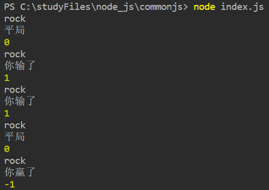 - 我们希望实现的需求是：电脑输三次就会自杀，代码紧接上面，改造index.js：打印结果如下：
1
2
3
4
5
6
7
8
9
10
11
12
13let count = 0
process.stdin.on('data', e => { // 获取进程的标准输入
const playerAction = e.toString().trim() // 并把这个标准输入转化成字符串输出出来
const result = game(playerAction)
console.log(result)
if(result === -1) {
count ++
}
if(count === 3) {
console.log('你太厉害了，我不玩了！')
process.exit()
}
})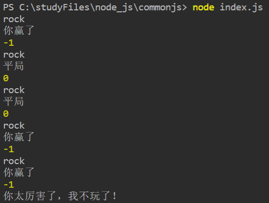
11 模块-npm
11-1 npm介绍
- npm是什么？
Node.js的包管理工具 - 包是什么？
别人写的Node.js模块 - npm上的著名大神：
TJ Holowaychunk - 贡献express包
Mafintosh
Dominictarr - npm event-stream事件 - 没有npm，也不会有现在这么繁荣的JS社区
11-2 怎么使用npm包呢?
- 新建npm文件夹，并在其中运行命令
$ npm init，问题一律选择默认，然后就会生成一个package.json，它是用来说明这个目录表达的是一个npm包，只要是npm包，就能装其他npm包 - 运行
$ npm install glob安装glob包，就会生成node_modules目录，在package.json中多出dependencies依赖：1
2
3
4
5
6
7
8
9
10
11
12
13
14{
"name": "npm",
"version": "1.0.0",
"description": "",
"main": "index.js",
"scripts": {
"test": "echo \"Error: no test specified\" && exit 1"
},
"author": "",
"license": "ISC",
"dependencies": {
"glob": "^7.1.6"
}
} - 直接在国外网站下载npm包太慢，可以使用淘宝npm镜像http://npm.taobao.org/，它把国外的所有npm包复制映射过来，并放到国内的服务器中了。怎么使用呢？
$ npm install -g cnpm --registry=https://registry.npm.taobao.org$ cnpm install gulp --save
- 关于npm的相关问题，可以登录查看官方文档
12 模块-nodejs内置模块
重申Node.js的官方定义：
1. Node.js是一个基于Chrome V8引擎的JavaScript运行环境（如图中左半部分） Application是我们所写的Node.js代码，它通过V8引擎运行，里面会涉及一些关于操作系统的调用，这部分就由V8引擎帮助转发到操作系统层面，从操作系统层面得到返回结果后，再通过V8引擎返回到JS中去。 从JS到V8再到操作系统的能力，有很大部分是由内置的模块提供的。
2. Node.js使用事件驱动，非阻塞式I/O的模型，使其轻量又高效（如图中右半部分）
12-1 nodejs内置模块
- 官网列出所有的内置模块，举例说明：
- File System - 用来操作文件的关于操作系统的api
- Net - 让我们可以使用操作系统的网络能力
- Process - 记载着Node.js进程的一些信息
- OS - 表示跟操作系统相关的模块
- os.arch() 表明了操作系统的架构，如32位、64位
- os.cpus() 得到node.js所运行的电脑里有多少cpu，以及cpu里有多少个内核，这些核的参数是怎样的
- os.freemem() 表示当前的操作系统还有多少空余内存
12-2 剖析nodejs内置模块
- 在github上查看源码，所有的内置模块都在lib文件夹中，查看os.js
- Node.js内置模块做的事情基本上是负责Node.js的应用层面到操作系统层面的通信，包括Node.js调用os的能力或者os通知Node.js的能力。
有了内置模块，Node.js就拥有了强大的和操作系统交互的能力，也就能顺利地做成服务端的应用。
12-3 event-emitter
- 观察者模式，即事件收发的模式，用来解决两个对象之间通信的问题，如addEventListener和removeEventListener
1
2
3
4
5
6
7
8
9
10
11
12
13
14
15
16
17
18
19
20
21// lib.js:
const EventEmitter = require('events').EventEmitter
class Geektime extends EventEmitter {
constructor() {
super()
setInterval(() => {
this.emit('newLession', { price: Math.random() * 100 })
}, 3000)
}
}
const geektime = new Geektime
module.exports = geektime
// index.js：
const geektime = require('./lib')
geektime.addListener('newLession', (res) => {
// 业务代码
if(res.price < 80) {
console.log('buy it', res)
}
})EverntEmitter的实例可以抛任意的事件出来，并且带着它想要的参数。
我们可以把底层的逻辑封装起来，放在某个模块里如lib.js，外面的业务代码拿到这个模块，通过事件的监听器就能方便地知道子模块里面发生的变化，这种变化并不需要geektime调用里面的函数，只需要它往自己身上抛一个事件即可。
这就是设计模式想要达到的目的，即扩展一些逻辑，完全不需要改动底层，就能提高程序的可维护性。 - 调用vs抛事件
比如老板通知秘书做某事，做好的方式还是调用，因为观察者模式抛事件的方式最适用的场景在于“不知道被通知者存在”以及“没有人监听还能继续下去”。
12-4 总结
经过模块这部分的研究，我们明确了Node.js的其中一个特点，就是它是一门具备可扩展性的全面的能在服务端运行的js技术。
13 异步-非阻塞i /o
13-1 非阻塞i /o的定义
- I/O即Input/Output，它指代一个系统的输入和输出
- 阻塞I/O和非阻塞I/O的区别就在于系统接收输入再到输出期间，能不能接收其他输入
【例1】排队打饭vs餐厅点菜
对于点菜人员来说，排队打饭是阻塞I/O，餐厅点菜是非阻塞I/O
系统=食堂阿姨/服务生，输入=点菜，输出=端菜
饭堂阿姨只能一份一份饭地打->阻塞I/O
服务生点完菜之后可以服务其他客人->非阻塞I/O
【例2】在Node.js论坛提问题：“这个Node.js问题怎么解决？在线等，急”
这也是个阻塞I/O的例子，因为在提问后到得到答案前什么都做不了，只能f5；
但是如果你提问后就去忙其他的了，待会再回来看是否有人回答，就是非阻塞I/O了。综上说明，为什么非阻塞I/O能得到性能的提升，是因为它能把不必要的等待省略掉。
- 理解非阻塞I/O的要点在于：
- 确定一个进行Input/Output的系统。
- 思考在I/O过程中，能不能进行其他I/O。
13-2 非阻塞i /o代码演示
- 新建目录nonblocking，在里面新建index.js，并运行
$ npm init，安装glob包$ npm install glob。
glob包的作用是能把目录下的所有文件和文件名递归地获取到。 - index.js中阻塞I/O代码如下：打印结果及操作耗时如下： 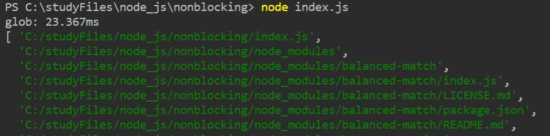
1
2
3
4
5
6const glob = require('glob')
let result = null
console.time('glob')
result = glob.sync(__dirname + '/**/*')
console.timeEnd('glob')
console.log(result) - index.js中非阻塞I/O代码如下：打印结果及操作耗时如下： 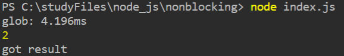
1
2
3
4
5
6
7
8
9
10const glob = require('glob')
let result = null
console.time('glob')
glob(__dirname + '/**/*', function(err, res) {
result = res
// console.log(result)
console.log('got result')
})
console.timeEnd('glob')
console.log(1 + 1) - 通过以上的代码演示，我们发现：
非阻塞I/O比阻塞I/O的耗时缩短了许多，减少了node.js的等待时间；
非阻塞I/O在glob方法回调前，就先执行了1+1计算，等glob方法有了结果，才打印出相应的结果。
13-3 nodejs架构图讲解
- 图中是按照线程重新划分，蓝框左半部分都是Node.js线程，它的所有I/O操作都是非阻塞的，它会把大量的计算能力分发到其他的C++线程去计算，等到其他C++线程把计算都执行完毕后，再把结果回调到Node.js线程，Node.js线程再把这个结果返回给应用程序。
- LIBUV是实现Node.js非阻塞I/O的核心模块
14 异步-异步编程之callback
14-1 回调函数
- Node.js中的回调函数有一定的格式规范，叫做error-first callback或Node-style callback。含义是所有的callback函数都要遵循这个参数格式，即第一个参数是error，剩余的参数才是这个回调函数的执行结果。
未完待续……